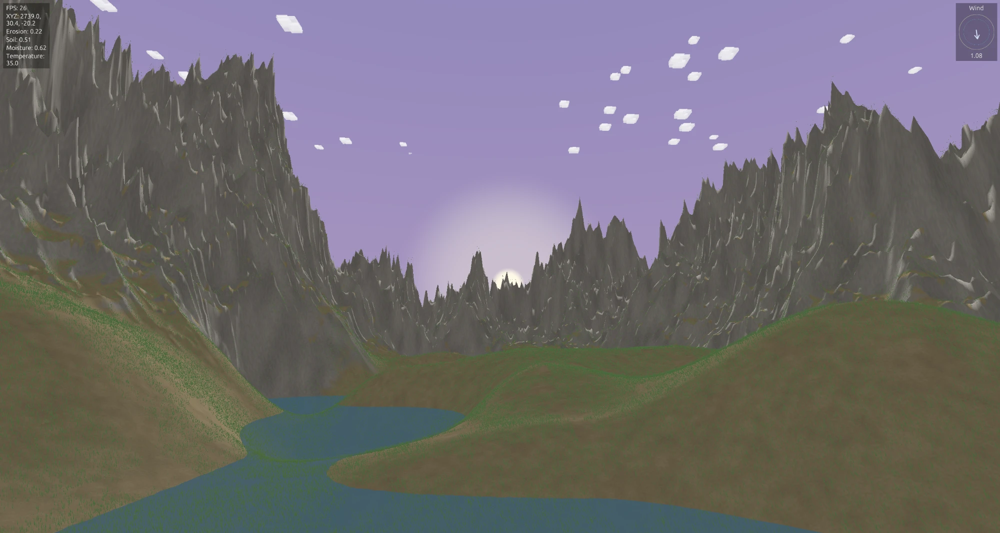

Meat Craft
A first-person survival game about starting with nothing but two hands — built from scratch in Rust, on a custom engine written for it.
What it's about
There's no inventory screen, no crafting menu, no item list. What you're holding is what you have: one thing in each hand, picked up off the ground. A stick and a spindle can start a fire if you work the ember up before it cools. A bow and an arrow can bring down a deer or a guinea fowl if the shot lands.
The world is procedurally generated and streams in around you as you walk — terrain, grass, water, and sky all built and rendered live rather than pre-baked. Before you step into a world, a preview screen lets you see and tune the noise maps that will shape its oceans and mountains, so you're choosing a place rather than just a seed number.
How it's built
The whole thing is three Rust crates: a small rendering engine (engine) built directly on wgpu, the game itself (game), and a world-generation editor (editor) for previewing and tuning terrain before it's played. No off-the-shelf game engine — camera, collision, shadows, water, grass, and the sky all hand-written against the GPU.
Screenshots
More coming as the game develops.
